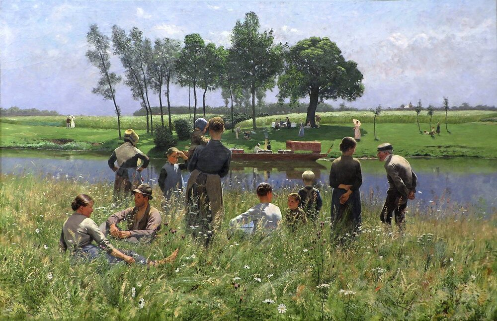

A2 · Everyday Life
A Weekend at the Lake
What happened last Saturday, what is happening now, and what the family will do next time.
Reading
Play the audio and follow along, then read it again on your own. Tap or hover over a highlighted word to see what it means.
Last Saturday morning, my family decided to go to the lake. We packed sandwiches, water and a big blanket, and Dad started the car before eight o'clock. On the way, my little brother saw a deer at the edge of the forest, and Mom took about twenty photos of it with her phone. Only two of them were any good.
When we arrived, the sun was shining and the water was completely still. I ran down and jumped straight in, which was a mistake, because the lake in May is much colder than it looks. My sister swam all the way out to the small island without stopping. Dad fished for two hours and caught two fish, and then put them both back, which my brother did not understand at all.
We ate at about one o'clock. My brother dropped his sandwich in the sand and cried for five minutes, and then ate half of mine instead. In the afternoon we lay on the blanket and nobody spoke very much. It was the best day we have had this year.

Right now I am sitting at the kitchen table and writing this, and I can hear my brother in the next room. He is telling my grandmother about the deer, and the deer is getting larger every time he describes it. My sister is looking at the photographs on the computer and complaining that Mom's finger is in most of them. Mom is not listening. She is making dinner and pretending she cannot hear.
Next weekend we are going back. Dad says he will take the small boat this time, and my sister says she will swim to the island again and I will not manage it, which is probably true. My brother is going to look for the deer, and he will be disappointed, and then he will find something else instead. He always does.
Key Vocabulary
- to pack to put things into a bag or box before a journey
- blanket a large piece of cloth, here to sit on
- edge the outer part or border of something
- deer a wild animal with long legs that lives in forests
- still not moving at all
- to jump in to enter water quickly with your whole body
- to fish to try to catch fish
- to catch to take hold of something moving
- to drop to let something fall
- to lie to rest flat on a surface
- to describe to say what something is like
- to complain to say you are not happy about something
- to pretend to act as if something is true when it is not
- to manage to succeed in doing something difficult
- disappointed sad because something was not as good as you hoped
A Weekend at the Lake — A2 · Everyday Life · Renan the Teacher, English Language Academy · https://renangrossi.github.io/englishclasses/reading/a2/a-weekend-at-the-lake.html
Interactive Exercises
Practice
Complete each exercise, then click Submit to see your score and an explanation for every answer.
Speaking & Writing
Discussion
There are no right answers here — use these to practice speaking, or write a short answer to each.
- Describe last weekend in five sentences, all in the past simple.
- Now describe what is happening around you at this moment, in three sentences.
- What are you doing next weekend? Use a fixed arrangement, an intention and a prediction.
- The deer gets bigger every time the brother tells the story. Why do stories change when we retell them?
- Write about 100 words about a day out with your family, using the past simple for what happened.